Summary
We have successfully completed the prototype of our product and presented it at the Mechatronics Engineering Symposium and at the Mechatronics Convention at the University of Waterloo. It was a great event with many people showing tremendous interest in our robot.
We are proud to announce that we won the Best Overall Technical Content award among all other projects being presented. Here is the video that summarizes our journey through the past eight months. It makes us proud to see how we started from a wooden prototype and finished with a polished and functional autonomous robot.
Video
Summary
Today, we are very excited to present to you our newest product, Maverick. Maverick is a fully-functional autonomous wall-painting robot equipped with all the latest sensors and autonomous technologies. We are featuring live demos today at the Davis Center between 1 and 5 PM. Feel free to stop by for a demo and ask us questions! Without further ado, check out our reveal video below.
Video
Summary
Tomorrow is the Mechatronics Engineering Symposium event at the University of Waterloo! We've been working very hard over the past months to get our robot ready for tomorrow. This symposium is our opportunity to showcase our final prototype. We look forward to presenting to professors, industry specialists, investors, and fellow colleagues. The event will be held inside the Davis Center lobby between 1:00 PM and 5:00 PM EST.
Over the past few weeks we've assembled our robot, wired our electronics, and implemented autonomous software. Today we finalized our wiring, fastened on our last rivets, and worked out all the bugs in our software code. The final robot can be seen below.
Photos
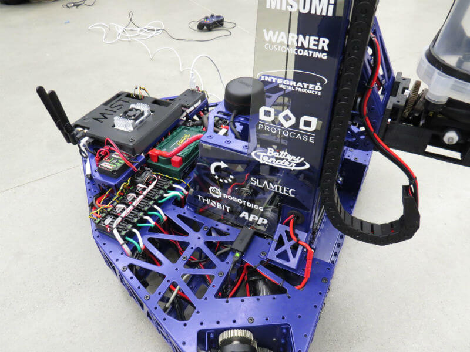
Summary
Today, we got our elevator’s motion under control. We have two limit switches and an encoder to create the desired spraying motion. The two limit switches are used to home the two stages of the elevator, while the encoder manages the position of the head throughout the lift.
We are using the Motion Magic framework to control the position of the lift using a PF controller. As of right now, we are able to control the position within 0.3% error without any overshoot. We will be tuning this controller with integral and differential gains as needed when we begin testing with a loaded paint canister. It will be interesting to test the robustness of the controller as the weight of the payload decreases over time.
Video
Summary
Our team has been hard at work to get autonomous navigation working. We are able to now generate waypoints given a map of a room and traverse them. The waypoints are automatically generated to keep a certain distance from the wall and to maintain a particular orientation needed to paint the wall. The generated waypoints are set to a predetermined distance from one another, which will be tuned based on the overlap needed to produce good painting results. As of right now, we are able to traverse straight walls and are working on implementing code to be able to turn corners. We are planning to turn corners in multiple steps as it will allow for the desirable levels of paint coverage.
Under the hood, we are using the amcl ROS node to localize our robot in the environment. It uses lasers scans from our LIDAR, the map of the environment, the initial pose estimate of the robot, and a particle filter to determine the state of the robot. Next, we will look into integrating elevator lift movement and paint spraying into the autonomous motions of the robot.
Video
Summary
Last week, we started assembling our lift mechanism. However, it has taken a long time to get it to a stage where we are confident to power it up using a motor.
Over the course of the assembly, we ran into friction issues caused by the power coat, rope tensions, and unexpected wobble on the motor. We resolved the friction issues by manually running the elevator with a wrench until the paint chipped away in the areas of friction. The rope tension issues were resolved by trying different knots, such as the Bowline knot and the Double Fisherman’s knot, until we were able to successfully tension the rope and have zero knot slippage issues. We found that the Double Fisherman is not only easier to tie, but that it also provides less chances of the knot slipping. The wobble in the motor was fixed by reassembling the gearbox and motor combo, as it was originally assembled incorrectly.
Having solved these issues, we were able to run the elevator using a motor as shown in the video below. We will be implementing controllers to move the elevator up and down very soon and will keep you updated.
Video
Summary
A few weeks ago we got serial communication working between the Jetson TX1 and the Hero Development board using FTDI serial communication chips. However, we hadn’t fully tested two-way communication for our application. We wanted to transfer IMU and encoder data from the Hero board to the Jetson while at the same time transferring velocity commands from the Jetson to the Hero. When we tried our code for this application, we realized that there was a significant lag between when the data was sent and when it was received. We never had these delays when testing one-way communication.
After trying a few methods, we decided to install two FTDI chips, each of which would be responsible for one-way communication. While this did speed up the communication, there was still a slight delay. As such we decided to multi-thread our code on the Hero and run two nodes on the Jetson. This resulted in significant performance gains, allowing for accurate actuation and feedback data transfers.
Summary
Today, we finally saw our robot moving for the first time. We used an inverse motion model for the 3-wheeled omni-wheel robot to convert the velocities in x and y directions, as well as to covert the angular velocity to wheel velocities of the robot.
We are using the Logitech Gamepad F310 Controller to control our robot. We have configured the R2 button on the controller to be a safety switch, which disables all motors when not held. We are using the left analog stick to perform forward/reverse and side-to-side motion and the right analog stick to perform rotational motion. We aim to have the robot moving autonomously soon!
Video
Summary
We are making progress in getting all of the electronics wired. We have completed wiring all of our talons, three of the drivetrain motors, and the battery circuit. We are using Powerpole connectors provided by our sponsor, Anderson Power Products, to connect the various components in our robot. This makes it easy to swap out any components that malfunction.
Photos
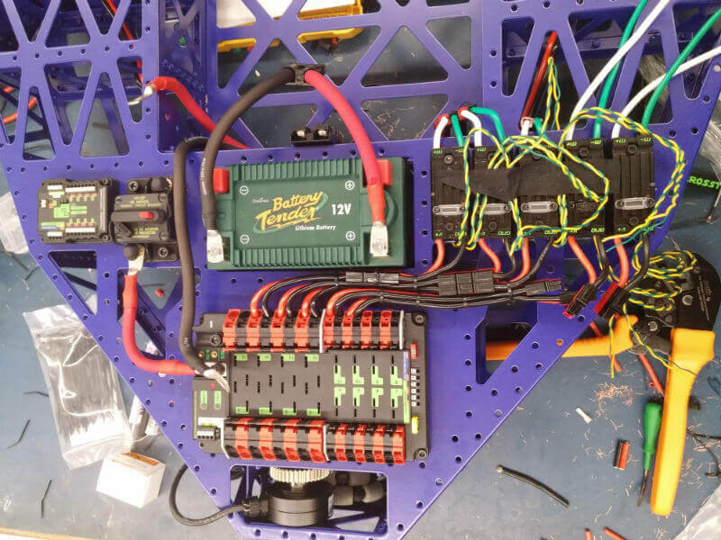
Summary
Today, we made good progress with our autonomous driving software stack. We got our SLAMTEC RPLIDAR A2-M8 to map its environment neatly and accurately. We used Hector SLAM to map the hallways inside Engineering 2 at the University of Waterloo. Hector SLAM is an approach to mapping that can be used independent of odometry. It leverages scan matching - a process of aligning laser scans with each other or with an existing map. Hector SLAM optimizes the alignment of the incoming laser beam endpoints with the map learned so far and is able to leverage the high scan rate of modern LIDARs and the high accuracy of laser scans.
In the video below, we mounted our RPLIDAR A2-M8 on a TurtleBot, and drove it down a hallway while mapping and localizing using the Hector SLAM algorithm. We see a very clean map with accurate localization despite of no odometry input as a result.
Video
Summary
We have finished the assembly of our drivetrain gearboxes as shown in the following photos. We will continue to work on getting the electronics wired, so we can have the drivetrain moving soon.
Photos
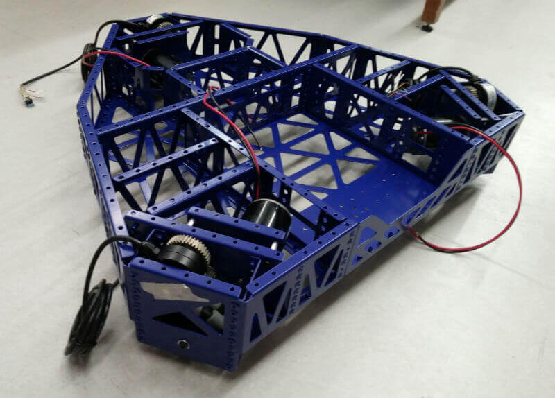 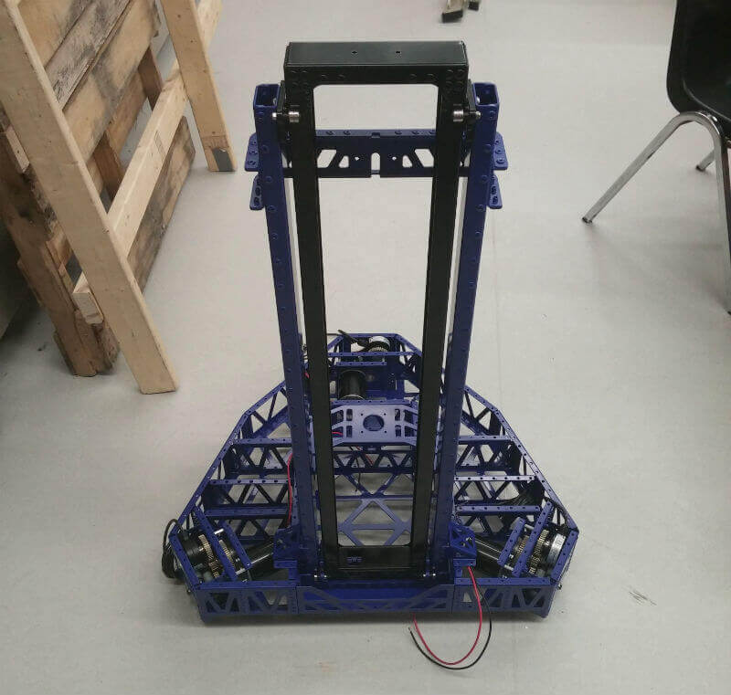
Summary
This morning, we received an email from our sponsor, Warner Custom Coating, telling us that our components were ready. We are happy to see how good the parts turned out with the blue/black colour scheme. Next, we will be finishing assembly and hope to have the robot moving soon.
Photos
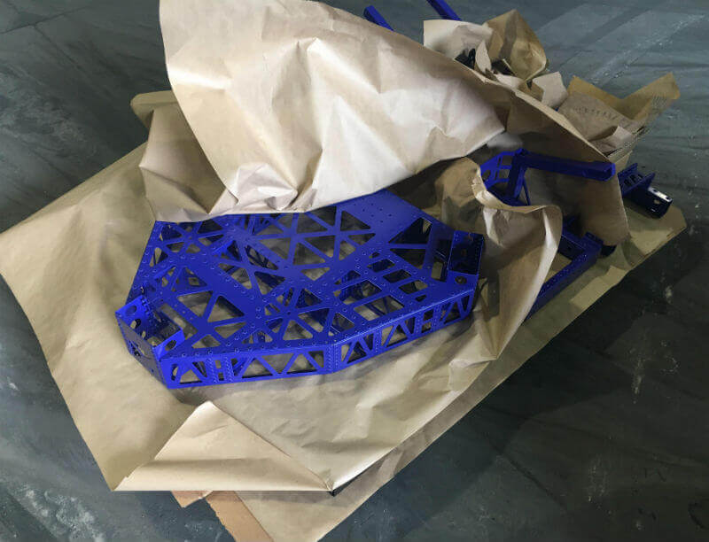 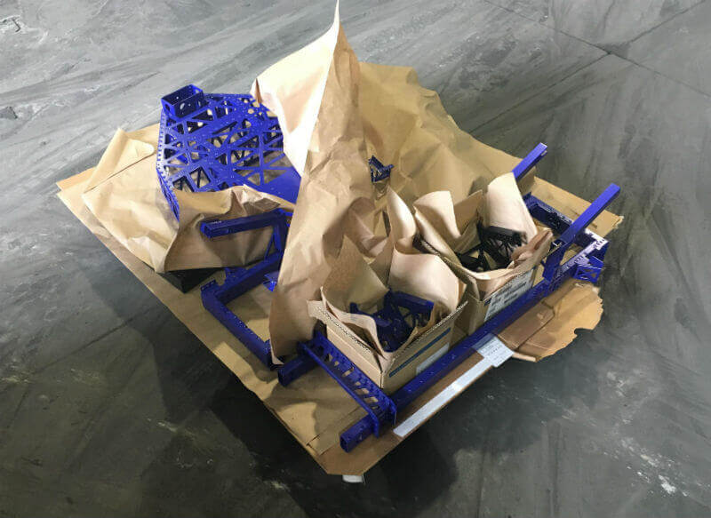
Summary
Having assembled our parts a couple of days ago, we bundled our sub-assemblies by the colour we wanted them powder coated and dropped them off at our sponsor, Warner Custom Coating’s, facility. We originally wanted to have the robot painted white with an accent of black, however due to the painting schedule, we decided to go with blue accented with black.
Photos
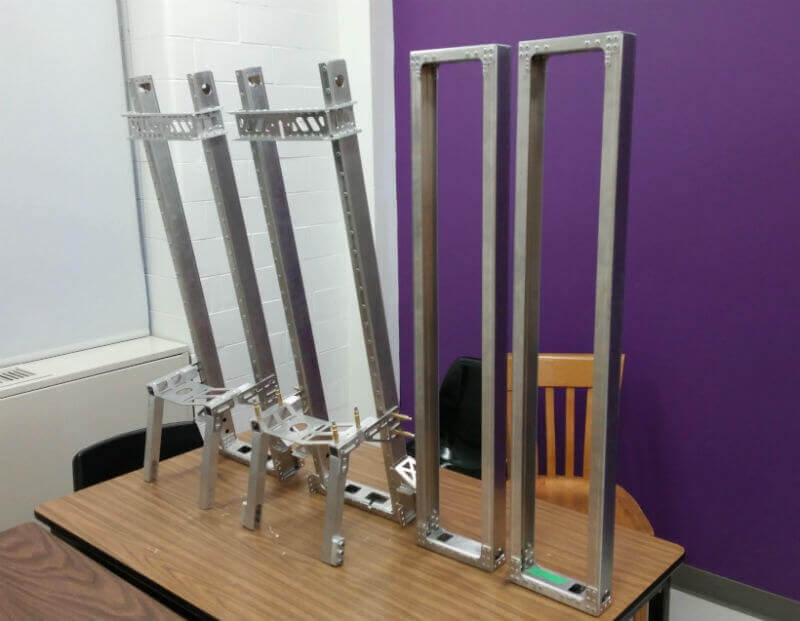 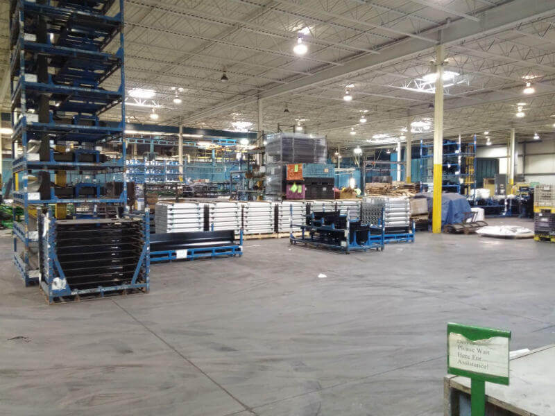 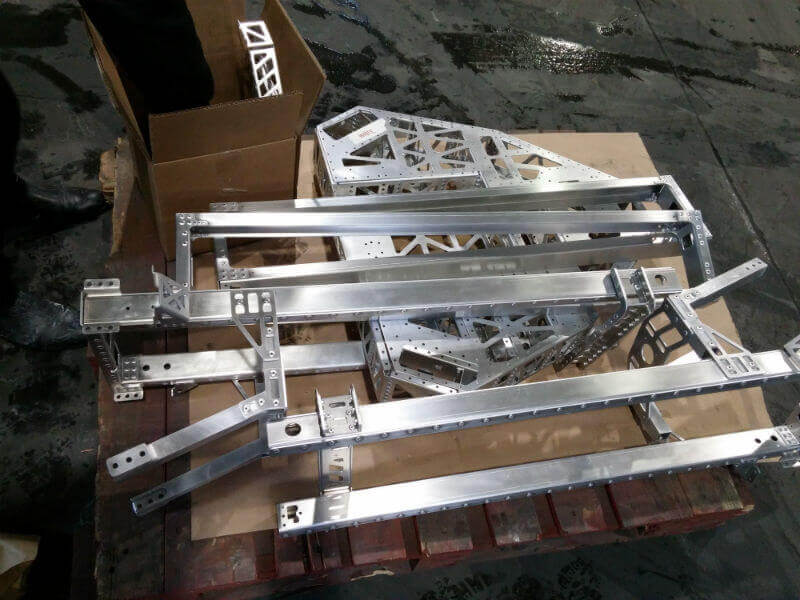
Summary
Over the past week and a half, the team has been hard at work assembling the sheet metal components so that the various assemblies can be sent to get powder coated. It has taken a while to complete these assemblies, as some in-house machining needed to be done to a few parts before complete assemblies could be done. For example, our bearing blocks required a hole to be drilled through its cross section, which could not have be done through the laser cutting process used in fabricating the sheet metal.
Photos
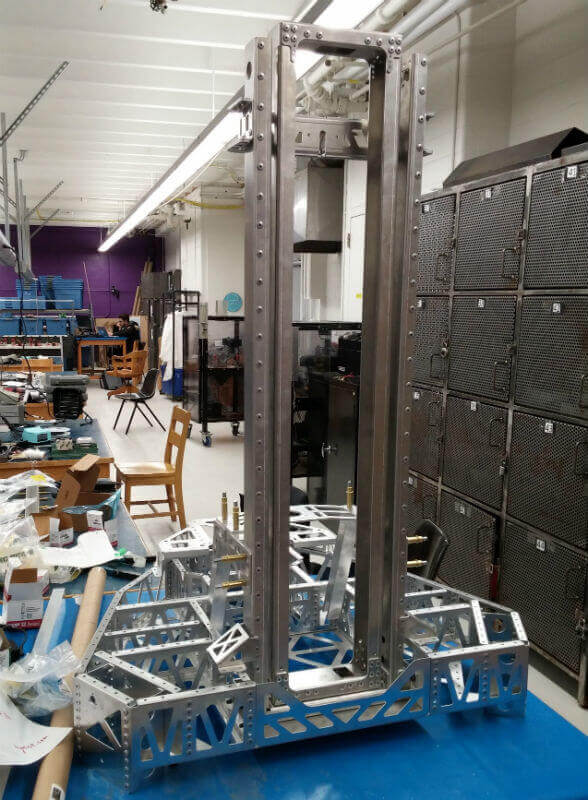 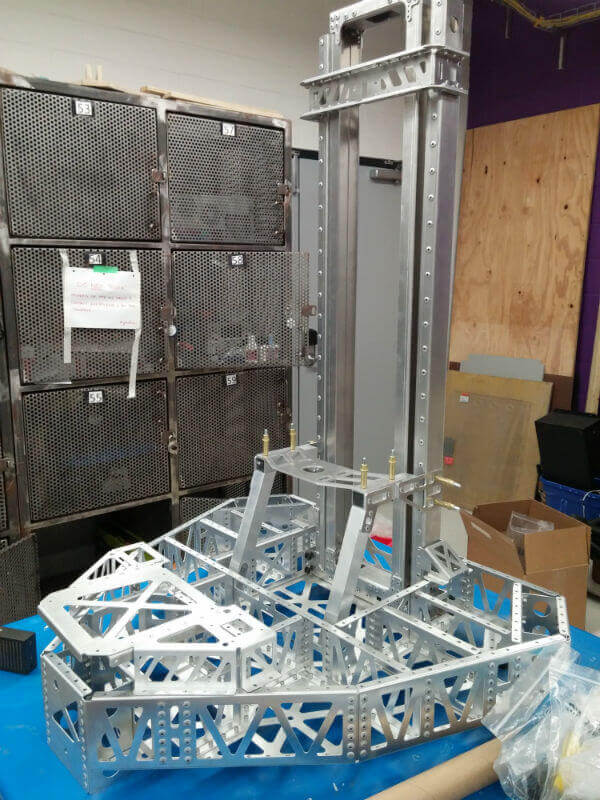
Summary
Today has been an exciting day. Not only did we receive the Protocase components this morning (see the previous blog for more on this), Dhruv, Shubham, and I (Utkarsh) took a trip to Guelph to pick up our elevator sheet metal components from our sponsor, Integrated Metal Products. And while we were there, we also got a tour of there facility, which is equipped with state of the art machines for laser cutting, metal bending, and welding.
Photos
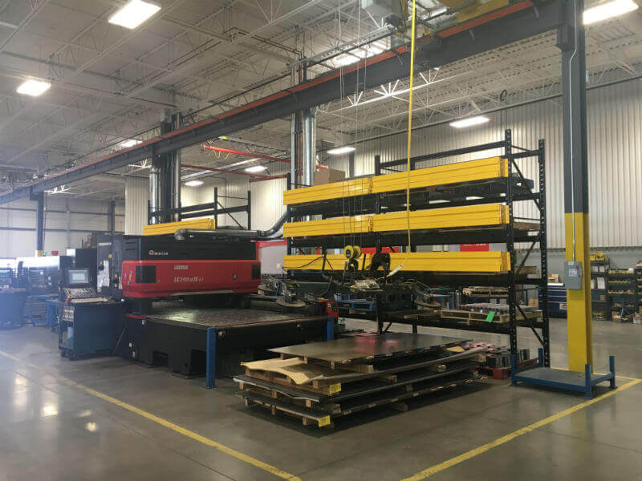
 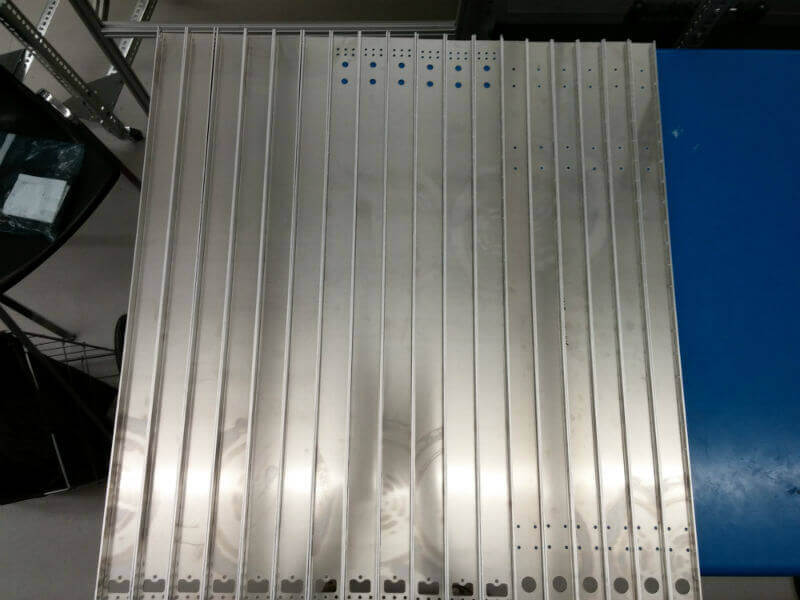
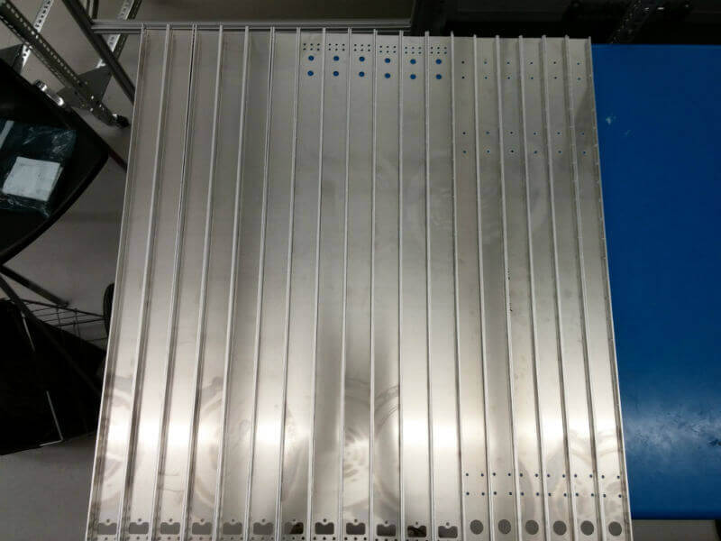
Summary
Our Protocase shipment just arrived this morning. We have been waiting for this day for awhile now, as having the sheet metal means that assembly of our robot can commence.
We are glad to see how fast our sponsor, Protocase, was able to get us the parts once we had approved the tolerances added by them. Additionally, the parts provided meet the specifications we had asked for and exemplify the quality we were looking for.
Photos
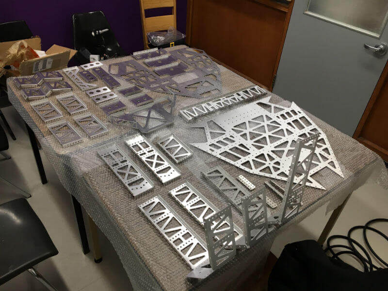
Summary
Over the last week, we have been in the machine shop manufacturing four unique drivetrain and elevator parts that are not being outsourced to a sponsor's facility. The drivetrain components mainly consist of shafts that will be used in the three gearboxes while the elevator components consist of the elevator supports and the main lift shaft.
Prior to coming to the machine shop, detailed drawings were created as shown below to allow for accurate part creation.
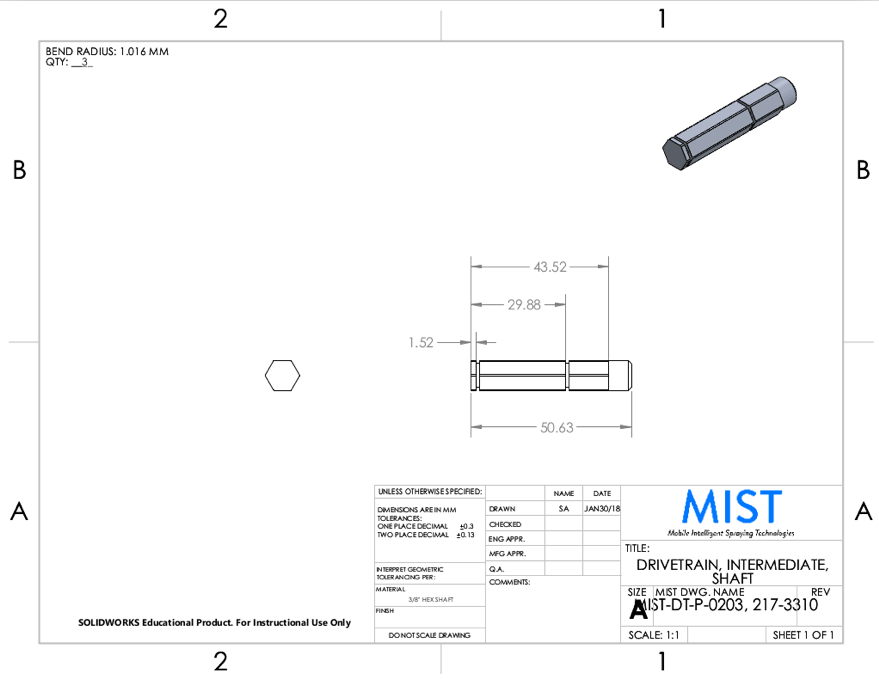
Below is a picture of Shubham using the lathe to put retaining ring grooves in a shaft using the SGI039D5 grooving insert provided by our sponsor Kaiser Tool Company.
Photos
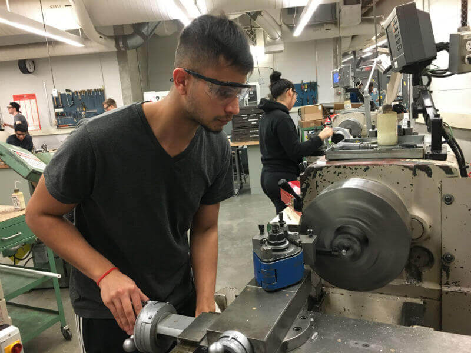 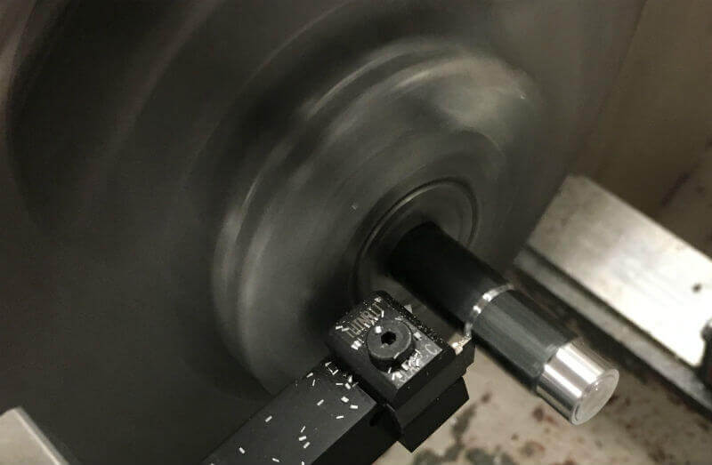
Summary
Today we received our batteries and battery chargers from our sponsor, Deltran Battery Tender. We are using one 12V, 480 LCA Lithium Engine Start Battery to power all the actuators and electronics on our robot, which should allow for a runtime of approximately 1.5 hours based on an average use case.
To ensure that our team is able to test for prolonged periods, our sponsor has supplied us with a total of three 12V, 480 LCA Lithium Engine Start Battery along with two Power Tender 4 Amp Lead Acid & Lithium Chargers.
Originally, we were considering the use of lead acid batteries as they are fairly cheap for the large battery capacity required. However, we are thankful for having a sponsorship for our lithium batteries as they allow us to have the same battery capacity but with a 4 times weight reduction. Additionally, lithium batteries are known to provide a consistent voltage for the majority of a discharge cycle, unlike lead acid batteries which drop in voltage as they near the end of a discharge cycle, which results in the requirement of a more complex control strategy.
Photos
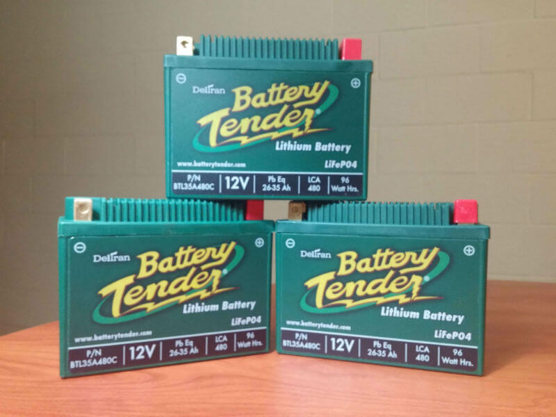
Summary
For the past week, we have been trying to get a good 3D scan of the pump from our sprayer. We need a good 3D scan of the pump so that we can design the spray platform for the elevator. After a bit of research online, we found a few options for this purpose including Qlone and Autodesk ReCap Photo, which both use photogrammetry methods to generate a 3D model using photos/video from a camera.
An initial attempt was made to test the Qlone app to scan a matchbox, to see how the results were using a basic object. To do this, we printed the AR mat that the app needs to be able to get accurate measurements of the object, we placed the object on the AR mat, and began scanning the object following the instructions on the screen. As we got a video of the object from all angles, the app was successful in creating a good representation of the object, except it did add a curvature to one of the surfaces. Additionally, at this stage we found out that for us to be able to export the 3D scan to a usable format, we needed to pay the app a substantial amount of money. This lead to us exploring our other option, Autodesk ReCap Photo.
Autodesk ReCap Photo Attempt 1
After installing the educational license of Autodesk ReCap Photo, an initial attempt in scanning the pump was made by rotating the pump in place on top of a table as photos were taken from multiple angles (Autodesk suggests that a photo be taken every 5 degrees for good results). A total of 206 photos were taken of which only 100 could be used, as was found out when uploading the photos to the application. This resulted in the loss of half of the total resolution. Overall, Attempt 1 was a failure and resulted in poor results, as shown below. In fact, it was so poor that we almost gave up on this technique for 3D scanning and were going to manually measure and CAD the pump.
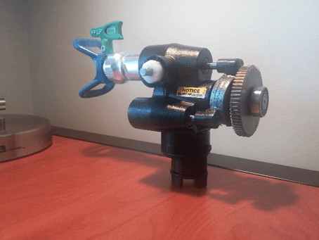 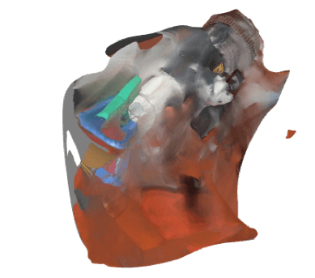
Autodesk ReCap Photo Attempt 2
We however didn't give up and with further research determined that spinning the object is not a good method to generate a good scan as the software struggles to track features as the object moves with respect to the background. So, this time, the pictures were taken from multiple positions as the object remained constant. Additionally, markers were added to the background and to the object to allow the software to have an easier time stitching the pictures together. This resulted in results that were confidence inspiring but not good enough to use for the 3D model, as shown below.
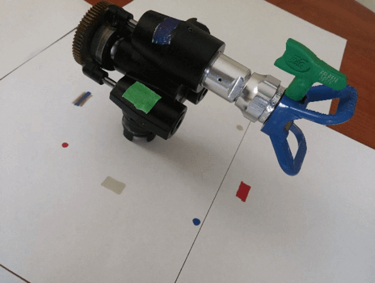 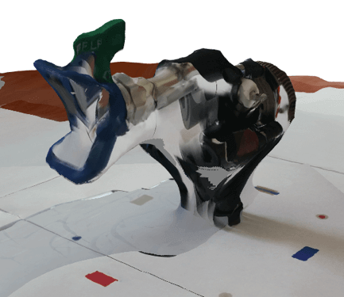
Autodesk ReCap Photo Attempt 3
Once again, after further research, it was determined that lighting and quality of images has a huge role in the end result. As such, this time an attempt was made to get the lighting correct, and a better camera was used to take the pictures. Additionally, the part was covered in Dr. Scholl's® Odour Destroyers® All Day Deodorant Spray Powder to ensure that the metallic portions of the part would not reflect light and to enhance the features of the part for the photos. All of this resulted in us getting a pretty good 3D model which we can use to complete our lift design. Our setup and results are shown below. There are a few blemishes in the 3D scan, which we are planning to clean up in our CAD software.
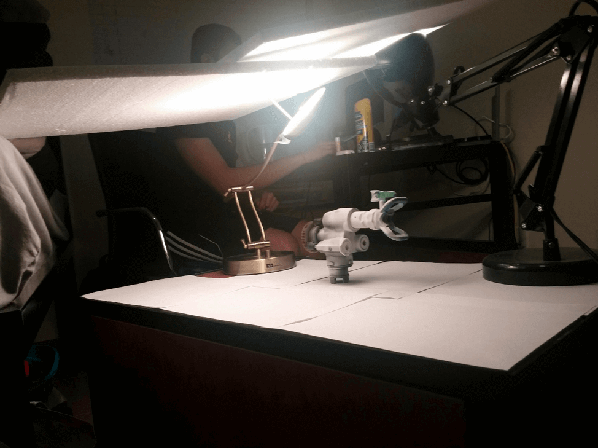 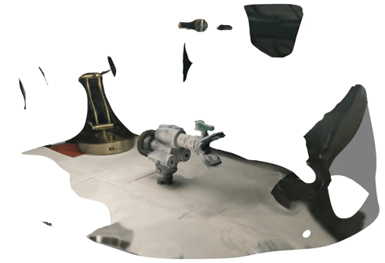 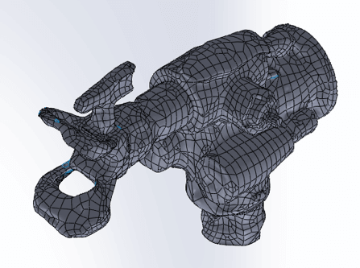
Summary
We've just received our RPLIDAR A2-M8 from SLAMTEC based out of Shanghai, China. Logically, the first thing to do upon receiving such a nice package is to film an unboxing video, so that's what we did. We believe that it will be of some benefit to those interested in purchasing this LIDAR.
In the unboxing video below, we reveal the contents of the package which include:
- 1 x RPLIDAR A2-M8
- 1 x Adapter (5 pins: PWM, GND, TX, RX, 5V) to Micro-USB and 5V power input
- 1 x Quick Start Guide
- 1 x Power Adapter
The RPLIDAR A2-M8 has the following specifications:
- Width: 76mm
- Height: 41mm
- Weight: 190g
- Measurement Frequency: 4000 samples/sec
- Typical Spinning Frequency: 600 RPM
- Scanning Range: 8m
Video
Summary
For a long time now, we have been debating whether we should be spraying paint or whether we should just continue using water with food coloring. We had originally decided to test using water with food coloring due to the fact that spraying paint at the symposium in March would not be feasible. This is because paint particles can be an irritant for people, which would require for a paint booth to be setup with proper ventilation. However, after testing with foam and water, we found that the "paint" quality was never going to be desirable as water doesn't behave anything like paint.
Today, we decided to give actual paint a try. Using the Graco Ultra Cordless Airless Handheld Airless Sprayer, we found that paint ionizes better, sticks better to the vertical surface, and has no bubbles forming due to saturation. We will be continuing to test spraying paint over the next week to get a better idea of the motion we need to recreate using our machine.
In addition to testing the paint quality, we decided to use this as an opportunity to determine the current draw characteristics of the paint spray gun we are going to be incorporating into our design. After reading the label on the spray gun, which gave the requirements of 20 V and 25 A, we were worried about how we would provide such power via our 12 V battery. From our tests, we found that the spray gun requires approximately 10 A @ 20 V at steady state in its low to medium pressure settings and approximately 17 A @ 20 V at steady state in its high-pressure setting. Additionally, it was determined that the transient (peak) currents ranged from 20 A to 30 A in all pressure settings.
This testing has allowed us to determine that if the spray gun is run at low to medium settings, the 12 V to 20 V conversion should be possible given our cost constraints. Over the next few weeks, we will be testing the spray gun's performance at 12 V, as this will allow us to significantly reduce the complexity of the power system.
Video
Summary
We received our encoders from Industrial Encoder Corporation a little while ago. Specifically, we received three IH 581 encoders, which will be used to give us accurate odometry for our three-wheel omni wheel drivetrain. These encoders are great for this application as they offer an high number of pulses per revolution (our ones have a resolution of 512 PPR), can withstand large velocities, and offer good build quality.
Since we have also received majority of our electronics at this point, we have started interfacing our sensors with our development board. One of the first sensors we have tested is our encoders. We connected our encoders to the HERO development board using CAN via the Talon SRX Encoder Breakout in combination with the Talon SRX motor controller. We have started to receive measurements from the sensor as shown in the video below.
3D CAD Model
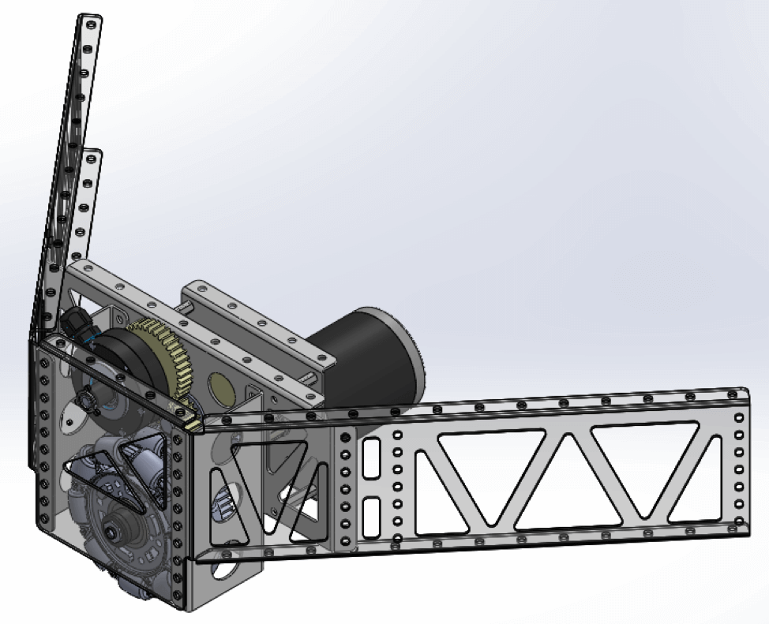
Video
Company Overview
Cross The Road (CTR) Electronics was founded by Mike Copioli and Omar Zrien in 2006. Their goal is to provide robust embedded solutions for various robotic and control applications. They have successfully designed products on multiple processor architectures while incorporating various I/O capabilities and communication protocols including CAN bus, Ethernet, I2C, SPI, and USB (host and device). Their designs are unique, durable, and cost effective and have been used by customers worldwide. Whether your needs involve software or hardware - their intent is to provide creative and durable solutions that meet your needs.
Sponsorship
We are thankful to be sponsored by CTR Electronics! Today we received a shipment containing the core components for our electrical system including the HERO Microcontroller, Power Distribution Panel, and the Talon SRX motor controllers. The out of the box CAN compatibility offered by all the components we received will allow us to bring up our system much faster, allowing us to focus on the software aspects of our system much earlier. Additionally, the Power Distribution Panel will allow us to power the many electrical components from our 12V battery in a safe and organized manner.
What's Next?
Over the next few weeks we will be wiring all our components to allow us to conduct a preliminary test of all the individual electrical components and the entire electrical system. During this time, we will also test the software libraries we have been researching and make changes as required. Additionally, we will be determining the best communication method between the NVIDIA Jetson TX1 and the HERO development board by testing various communication protocols such as SPI, Serial, UART, etc.
Photos
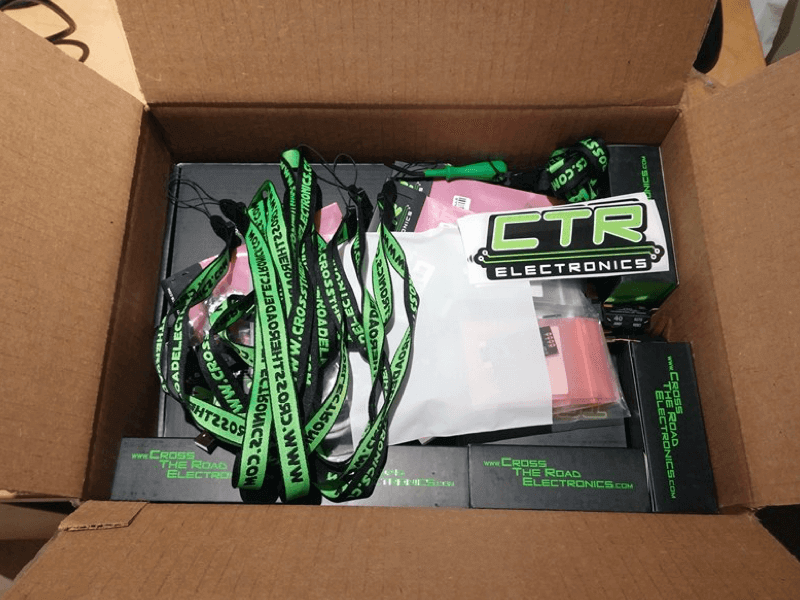 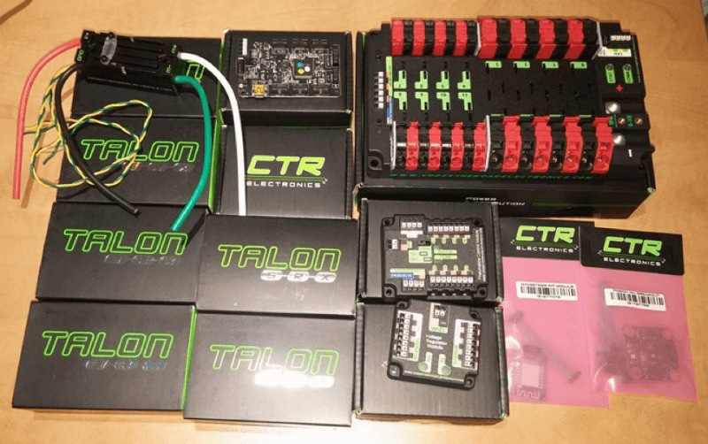
General Overview
We needed a proof-of-concept so that we could get this project rolling. The MIST team came together and brainstormed different approaches that can be taken to achieving an autonomous wall painting robot. After several weeks of research and collaboration, the team decided to build a ground-based autonomous solution that uses a cascade lift and paint sprayer combination to achieve autonomous wall painting.
Mechanical Design
In terms of mechanical design, we wanted to build a elevator lift system to prove that we can control vertical motion. We also wanted to automate the paint spraying mechanism such that no human interaction is required in operating the prototype. First, the prototype was designed in SolidWorks. Then, certain parts were 3D printed while other parts were machined out of wood pieces.
Electrical Design
In terms of electrical design, we had to interface a couple of components together. We used an Arduino board to implement our paint spraying motion profile, a DC motor to power the elevator lift, and a servo motor to control the actuation of the paint spray gun. Using a multi-source power supply, the servo motor was powered up on a 5V line while the DC motor was powered up on a 8V line, while the Arduino was powered from our laptop.
Software Design
In terms of software design, we implemented some simple Arduino code that allowed us to set a motion profile of vertical motion using the serial monitor as well as allowing us to dynamically control the actuation of the paint spray gun.
Demo